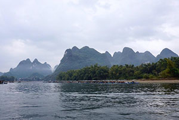
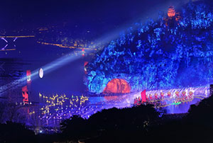
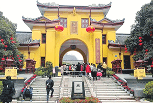
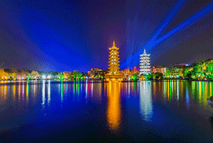
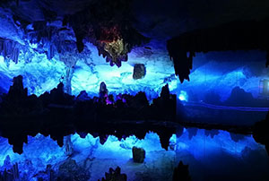

桂林漓江风景区
 漓江位于华南广西壮族自治区东部，属珠江水系。漓江发源于“华南第一峰”桂北越城岭漓江见闻猫儿山，猫儿山是个林丰木秀，空气清新，生态环境极佳的地方。漓江上游主流称六峒河；南流至兴安县司门前附近，东纳黄柏江，西受川江，合流称溶江；由溶江镇汇灵渠水，流经灵川、桂林、阳朔，至平乐，汇入西江，全长437公里。从桂林到阳朔约83公里的水程，称漓江。桂林象山景区
 象鼻山原名漓山，位于广西区桂林市内桃花江与漓江汇流处，山因酷似一只站在江边伸鼻豪饮漓江甘泉的巨象而得名，被人们称为桂林山水的象征。象山以神奇著称。其神奇，首先是形神毕似，其次是在鼻腿之间造就一轮临水明月，构成“象山水月”奇景。因此，象鼻山是桂林的城徽山，是桂林旅游的标志山，它坐落在桂林市中心的漓江与桃花江汇流处，形似一头巨象，象鼻和象腿之间是面积约一百五十平米的圆洞，江水穿洞而过，如明月浮水。桂林王城景区
 靖江王城坐落于广西壮族自治区桂林市漓江西岸，是明朝藩王靖江王朱守谦的藩王府，始建于洪武五年（公元1372年）洪武二十五（公元1392年）年建成，靖江王城外围有国内保存最完好的明代城墙。由于靖江王城地处桂林市城市中心地区，因而有“阅尽王城知桂林”之说。桂林两江四湖景区
 指由漓江、桃花江两条江与杉湖、榕湖、桂湖、木龙湖四个湖泊构成的桂林市环城水系。江湖烟波淼淼，岸畔绿柳依依，山光水色莫不令人感慨万千。入夜灯火璀璨，更是美不胜收，妙不可言。徒步其间，可观赏各式精美大小桥28座、精典景观计100处。两江四湖环城水系是桂林城区的灵魂。绸缎似的江，翡翠般的湖，给中外游客的感受是，舟行碧波上，人在画中游。得天独厚的优势，使得两江四湖成为桂林城区的主打名片：中国人居环境范例奖、国家AAAA级景区、广西十佳景区。中国国宾洞
